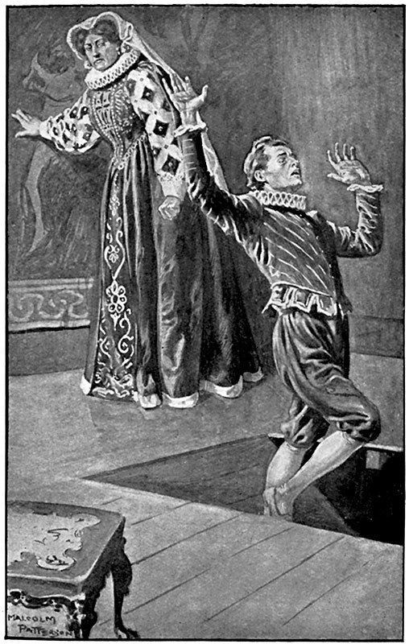

Несмотря на отказ герцога Алансонского бежать, который ставил под угрозу все дело и даже самую жизнь Генриха Наваррского, последний стал еще большим другом герцога, чем раньше.
Заметив их близость, Екатерина заключила, что они не только сговорились между собой, но и составили какой-то заговор. Она решила расспросить Маргариту; но Маргарита оказалась достойной ее дочерью: главным ее талантом было умение избегать скользких разговоров, поэтому она крайне осторожно отнеслась к вопросам своей матери и так ответила на них, что королева еще больше запуталась в своих догадках.
Таким образом, этой флорентийке не оставалось ничего другого, как руководиться своим чутьем интриги, приобретенным ею еще в Тоскане, самом интриганском изо всех мелких государств той эпохи, и чувством ненависти, воспитанным на нравах французского двора, где в эти времена борьба различных интересов и воззрений кипела сильнее, чем при любом другом дворе.
Прежде всего она поняла, что сила Беарнца отчасти заключалась в его союзе с герцогом Алансонским, и решила их разъединить. Приняв это решение, она начала улавливать своего сына с терпением и талантом рыболова, который, забросив грузила невода подалее от рыбы, мало-помалу подтягивает их к одному месту, пока не окружит со всех сторон свою добычу. Герцог Франсуа заметил усиление родительской нежности и, со своей стороны, пошел навстречу матери. А Генрих Наваррский сделал вид, что ничего не замечает, и стал следить за своим союзником еще внимательнее, чем прежде.
Каждый из них ждал какого-нибудь события. А пока они ждали этого события, для одних – вполне определенного, для других – только вероятного, в это время, утром, когда вставало розовое солнце, разливая мягкое тепло и нежный аромат – предвестники ясной погоды, какой-то бледный человек, опираясь на палку, с трудом вышел из домика за Арсеналом и поплелся по улице Пти-Мюз. Близ ворот Сент– Антуан он прошел вдоль болотистого луга, окружавшего рвы Бастилии, затем, оставив влево большой бульвар, вошел в Арбалетный сад, где сторож приветствовал его низкими поклонами.
В саду не было никого, потому что сад, как показывает само название, принадлежал частному обществу – обществу любителей стрельбы из арбалета. Но если бы там оказались гуляющие, то этот человек заслуживал бы всяческого их внимания: длинные усы, походка, хотя замедленная болезнью, но сохранившая военную выправку, – все это указывало на то, что незнакомец был офицер, раненный недавно в какой-то стычке, который пробовал свои силы после болезни и вновь привыкал к жизни под открытым небом.
Человек был закутан в длинный плащ, несмотря на наступавшую жару, и казался безобидным, но странное дело: когда распахивался плащ, под ним виднелись два длинных пистолета, пристегнутые серебряными застежками к поясу, который поддерживал засунутый за него большой кинжал и шпагу такой длины, что казалось, у владельца шпаги не хватит силы обнажить ее, а кроме того, заканчивая снизу этот ходячий арсенал, она все время била ножнами по его похудевшим и дрожавшим ногам. В дополнение к этим мерам предосторожности таинственный посетитель сада, несмотря на полное одиночество, пытливо озирался при каждом шаге, точно исследуя каждый поворот дорожки, каждую канавку, каждый кустик.
Так, пробираясь потихоньку, он углубился в сад и спокойно вошел в какое-то подобие беседки, примыкавшей к самому бульвару и отделенной от него только двойной оградой в виде густой живой изгороди и небольшой канавы. Там этот человек разлегся на дерновой скамейке рядом со столом, а через минуту сторож, совмещавший с этой должностью и ремесло харчевника, принес туда какой-то напиток для укрепления сердца.
Больной лежал уже минут десять, несколько раз подносил ко рту фаянсовую чашку и пил из нее маленькими глотками принесенное питье, как вдруг лицо его, несмотря на «интересную бледность», стало страшным. Он увидел, как со стороны Круа-Фобен, по тропинке, где теперь Неаполитанская улица, подъехал всадник, закутанный в широкий плащ, остановился у бастиона и стал ждать.
Прошло минут пять; за этот срок бледный человек, в котором читатель, вероятно, уже узнал Морвеля, едва успел оправиться от волнения, вызванного появлением всадника, как в то же время по дороге, ставшей потом улицей Фосе-Сен– Николя, какой-то юноша, одетый в узенькую безрукавку, как у пажей, подошел к всаднику.
Морвель, совершенно скрытый листвой беседки, имел полную возможность все видеть и даже слышать, и если принять во внимание, что всадник был де Муи, а юноша в курточке – Ортон, то можно себе представить, как напряглись и слух, и зрение Морвеля.
Оба вновь прибывших стали тщательно осматривать все кругом. Морвель затаил дыхание.
– Месье, можете говорить, – первым заговорил Ортон, как более молодой и, следовательно, менее осторожный, – здесь никто нас не увидит и не услышит.
– Это хорошо, – ответил де Муи. – Ты пойдешь к мадам де Сов; если она дома, отдашь ей эту записку в собственные руки; если ее дома нет, засунь записку за зеркало, куда король Наваррский кладет свои записки; после этого подожди в Лувре. Если получишь ответ, отнесешь его в известное тебе место; если же ответа не будет, то захвати с собой коротенькую аркебузу и приходи ко мне туда, куда я указал тебе и откуда я сейчас выехал.
– Ладно, знаю, – ответил Ортон.
– Я поеду; у меня еще куча дел на сегодняшний день. А ты не торопись, нет смысла; тебе нечего делать в Лувре до его прихода, а он, как я думаю, берет урок соколиной охоты. Ступай и действуй открыто: ты уже здоров и пришел в Лувр просто поблагодарить мадам де Сов за ее заботы о тебе, пока ты выздоравливал. Ступай, мой мальчик.
У Морвеля, пока он это слушал, глаза впились в одну точку, волосы зашевелились на голове и пот выступил на лбу. Первым его движением было отстегнуть пистолет и прицелиться в де Муи; но, повернувшись на седле, де Муи приоткрыл полы своего плаща и обнаружил надетую на нем прочную кирасу. Могло случиться, что пуля расплющится на ней или ударит в такую часть тела, где рана будет не смертельна. Кроме того, Морвель сообразил, что здоровый, хорошо вооруженный де Муи легко одержит верх над ним, раненным, и, тяжело вздохнув, опустил свой пистолет, уже направленный на гугенота.
– Какое горе, – прошептал он, – что нельзя убить его теперь, когда нет свидетелей, кроме этого разбойника-мальчишки, который стоит второй пули!
Но у него сейчас же мелькнула мысль, что, может быть, записка, врученная Ортону для передачи мадам де Сов, важнее, чем жизнь или смерть гугенотского вождя.
– Ну ладно, сегодня ты от меня ушел! Ступай подобру-поздорову! Зато завтра я свое возьму, хотя бы пришлось лезть за тобой в самый ад, откуда ты и вышел, чтобы меня убить, если я не убью тебя.
В это время де Муи прикрыл лицо плащом и поскакал по направлению к Тампльским болотам. Ортон пошел вдоль рвов, которые вели к реке. Тогда Морвель вскочил так бодро и проворно, как сам не ожидал, добрался до улицы Серизе, вошел к себе в дом, велел оседлать лошадь и, несмотря на большую слабость и на опасность, что раны его могут открыться, поскакал по улице Сент-Антуан, затем по набережной и влетел в Лувр.
Через пять минут после того, как он мелькнул в пропускных воротах, Екатерина уже знала все, что произошло, а Морвель получил тысячу экю золотом, обещанные ему за арест короля Наваррского.
– Теперь или я ошибаюсь, – сказала Екатерина, – или де Муи будет тем самым темным пятном, которое Рене нашел в гороскопе проклятого Беарнца!
Через четверть часа после приезда Морвеля Ортон совершенно открыто, как и советовал де Муи, вошел в Лувр и, поговорив с несколькими придворными лакеями, направился к мадам де Сов.
В покоях мадам де Сов находилась одна Дариола. Минут за пять до прихода Ортона Екатерина вызвала к себе Шарлотту, чтобы переписать набело какие-то нужные письма.
– Ладно, подожду, – сказал Ортон.
Будучи своим человеком в доме, юноша прошел в спальню баронессы и, убедившись, что он один, положил записку за зеркало. В то самое мгновение, когда он отнимал руку от зеркала, вошла Екатерина.
Ортону показалось, что быстрый, пронизывающий взгляд королевы-матери направился на зеркало, и юноша побледнел.
– Мальчик, ты что здесь делаешь? Уж не ищешь ли ты мадам де Сов? – спросила Екатерина.
– Да, мадам; я уже давно ее не видел и не успел еще поблагодарить, поэтому боялся, что она сочтет меня неблагодарным.
– А ты очень любишь милую Карлотту?
– Всей душой, мадам.
– И, говорят, ты ей предан?
– Ваше величество сами поймете, что это вполне естественно, если рассказать вам, как мадам де Сов за мной ходила; а я простой слуга и не заслуживал таких забот.
– А по какому случаю она ухаживала за тобой? – спросила Екатерина, как будто не знала того, что случилось с юношей.
– Мадам, когда я был ранен.
– Ах, бедный мальчик! – сказала Екатерина. – Так ты был ранен?
– Да, мадам.
– Когда же?
– А когда приходили арестовать короля Наваррского. Я увидал солдат и так перепугался, что закричал и стал звать на помощь; один из них ударил меня по голове, и я упал в обморок.
– Бедный мальчик! Но теперь ты поправился?
– Да, мадам.
– И ты ищешь короля Наваррского, чтобы опять ему служить?
– Нет, мадам, король Наваррский узнал, что я осмелился противиться вашим приказаниям, и выгнал меня вон без всякой жалости.
– Вот как! – сказала Екатерина, изображая участие. – Хорошо! Я сама возьмусь за это дело. Но если ты ждешь мадам де Сов, то напрасно, – она занята наверху, у меня в кабинете.
У Екатерины мелькнула мысль, что Ортон, возможно, еще не успел спрятать записку за зеркало, и она ушла в кабинет мадам де Сов, чтобы предоставить юноше полную свободу действий.
В это время Ортон, встревоженный неожиданным приходом королевы-матери, мучился сомнением, не связан ли ее приход с каким-нибудь заговором против его господина. Как вдруг он услышал три легких удара в потолок: а когда король Наваррский бывал у мадам де Сов и Ортон их сторожил, то в его обязанность входило давать такой сигнал в случае опасности.
Услышав три удара, Ортон затрепетал; в силу какого-то таинственного озарения он понял, что эти три удара были предупреждением ему. Он подбежал к зеркалу и вытащил из-за него записку. Екатерина сквозь щелку между портьерами следила за всеми его движениями; она видела, как он бросился к зеркалу, но не знала – затем ли, чтобы спрятать или же вытащить записку.
«Почему же он не уходит?» – нетерпеливо спрашивала себя Екатерина.
И она быстро вошла в комнату, приветливо улыбаясь.
– Ты еще здесь, малыш? – спросила она. – Чего ты ждешь? Я же тебе сказала, что берусь сама тебя устроить. Ты не веришь тому, что я обещаю?
– О мадам! Избави боже! – ответил Ортон.
Он подошел к королеве-матери, опустился на колено, поцеловал полу ее платья и вышел.
При выходе он увидел в передней командира охраны, ожидавшего Екатерину. Это не только не ослабило подозрений Ортона, а их усилило. Не успела портьера опуститься за Ортоном, как королева устремилась к зеркалу. Но тщетно ее дрожавшая от нетерпения рука шарила за зеркалом – записки не было. А между тем она ясно видела, что мальчик подходил к зеркалу. Значит, он подходил, чтобы взять, а не положить записку! Перед лицом рока противники равны. С той минуты, как этот мальчик вступал в борьбу с Екатериной, он превращался для нее в мужчину.
Она все перевернула, пересмотрела, перерыла – ничего!
– Ах, негодяй! – воскликнула она. – Я не хотела ему зла, но раз он вытащил записку, он сам подписал свой приговор! Эй! Месье де Нансе! Эй!
Звонкий крик королевы-матери пронесся через гостиную до передней, где, как мы уже сказали, находился командир охраны.
Де Нансе прибежал на зов Екатерины.
– Я здесь, мадам! – сказал он. – Что прикажете, ваше величество?
– Вы были в передней?
– Да, мадам.
– Вы видели выходившего отсюда юношу, мальчика?
– Видел.
– Он, наверно, недалеко ушел?
– Самое большее – до половины лестницы.
– Кликните его.
– Как его зовут?
– Ортон. Если он не пойдет, приведите его силой. Только не пугайте его зря, если он не будет сопротивляться. Мне надо поговорить с ним сию же минуту.
Командир охраны побежал, и его предположение оправдалось: Ортон едва успел дойти до половины лестницы, спускаясь нарочно медленно в надежде встретить на лестнице или увидеть где-нибудь в коридорах короля Наваррского или мадам де Сов.
Ортон услышал, что его зовут, и задрожал. Первой его мыслью было бежать; но благодаря своей сметливости, развитой не по летам, он сообразил, что если побежит, то все погубит, – и остановился.
– Кто меня зовет?
– Я, месье де Нансе, – ответил командир охраны, сбегая с лестницы.
– Но я очень тороплюсь, – ответил Ортон.
– Я послан ее величеством королевой-матерью, – сказал де Нансе, подходя к Ортону.
Мальчик вытер пот, струившийся по лбу, и пошел обратно. Позади него шел командир.
Первоначально Екатерина решила арестовать Ортона, обыскать и отнять у него записку, которую он принес; для этого она придумала обвинить его в краже и уже взяла с туалетного столика алмазную застежку, с тем чтобы приписать мальчику ее исчезновение; но затем раздумала, боясь, что это возбудит подозрения у самого Ортона, который предупредит своего господина, а тогда Генрих будет осторожнее и примет меры, чтобы не попасться.
Екатерина, конечно, могла засадить юношу в одиночку, но, как ни соблюдай при этом тайну, слух об аресте все-таки распространится по Лувру, и одного слова об аресте будет достаточно, чтобы Генрих Наваррский насторожился.
Тем не менее записка де Муи к королю Наваррскому была необходима королеве-матери: в записке, отправленной с такими предосторожностями, наверное, заключался целый заговор.
Екатерина положила застежку на прежнее место.
«Нет, нет, – рассуждала она сама с собой, – выдумка с застежкой достойна полицейского агента, – никуда не годится. Но записка… А может быть, она ничего не стоит, – говорила она, нахмурив брови и так тихо, что сама еле слышала себя. – Да, впрочем, не моя вина; он сам виноват. Почему этот разбойник не положил записку, куда ему было приказано? Она должна быть у меня».
В это время вошел Ортон.
Несомненно, выражение лица Екатерины было страшно, потому что Ортон сразу побледнел и остановился на пороге. Он был чересчур молод и не умел еще владеть собой.
– Мадам, – сказал он, – вы сделали мне честь позвать меня; чем я могу служить вашему величеству?
Лицо Екатерины прояснилось, точно его озарил луч солнца.
– Я велела позвать тебя, потому что мне нравится твое лицо и я обещала заняться твоей судьбой. Я хочу сдержать свое обещание теперь же. Про нас, королев, говорят, что мы забывчивы. Но в этом виновато не наше сердце, а наш ум, занятый важными делами. Я вспомнила, что судьбы людей зависят от королевской воли, вот почему и позвала тебя. Пойдем, мальчик, идем со мной.
Де Нансе, принявший эту сцену за чистую монету, с изумлением смотрел на умилительную нежность Екатерины.
– Ты умеешь ездить верхом, мой мальчик? – спросила Екатерина.
– Да, мадам.
– Тогда пойдем ко мне в кабинет. Я дам тебе письмо, ты отвезешь его в Сен-Жермен.
– Я в распоряжении вашего величества.
– Нансе, велите оседлать ему лошадь.
Нансе ушел.
– Пойдем, мальчик, – сказала Екатерина.
Она пошла впереди, Ортон за ней. Королева-мать спустилась в следующий этаж, затем повернула в коридор, где находились покои короля и покои герцога Алансонского, дошла до витой лестницы, спустилась этажом ниже, отперла дверь в полукруглую галерею, от которой ключ был только у короля и у нее, впустила Ортона, вошла вслед за ним и затворила за собой дверь. Галерея окружала, как некое укрепление, часть покоев короля и королевы-матери. Так же, как галерея замка Святого Ангела в Риме и галерея в палаццо Питти во Флоренции, она служила убежищем в случае опасности.
Когда закрылась дверь, Екатерина и Ортон оказались в темном коридоре. Так они прошли шагов двадцать – Екатерина впереди, Ортон сзади. Вдруг Екатерина обернулась, и мальчик увидел то же страшное выражение лица, какое видел десять минут тому назад. В темноте казалось, что ее круглые, как у пантеры или кошки, глаза испускали пламя.
– Стой! – приказала она.
Ортон почувствовал, что у него по спине забегали мурашки: каменный свод обдавал холодом, как ледяной покров; пол казался мрачным, как могильный камень; взгляд королевы-матери, острый и колючий, вонзался в грудь бедного Ортона. От этого взгляда он затрепетал и отступил к стене.
– Где записка, которую тебе поручили передать королю Наваррскому?
– Передать записку? – спросил Ортон.
– Да, передать или, в случае его отсутствия, сунуть за зеркало?
– Мне, мадам? Я не понимаю, о чем вы говорите.
– Записку, которую дал тебе де Муи час тому назад за Арбалетным садом.
– У меня нет никакой записки, – ответил Ортон. – Ваше величество, наверно, ошиблись.
– Лжешь! Отдай записку, и я исполню обещание, которое тебе дала.
– Какое обещание, мадам?
– Я тебя сделаю богатым.
– У меня нет записки, мадам, – повторил мальчик.
Екатерина заскрежетала зубами, но сейчас же пересилила себя и улыбнулась.
– Отдашь записку – получишь тысячу экю золотом, – сказала она.
– У меня нет записки, мадам.
– Две тысячи экю.
– Невозможно! Коль ее нет у меня, как же я ее отдам?
– Ортон, десять тысяч!
Ортон видел, как ее злоба, поднимаясь изнутри, приливала к лицу, тогда он подумал, что единственный способ спасти своего господина – это проглотить записку. Он поднес руку к карману. Екатерина поняла намерение Ортона и остановила его руку.
– Брось, мальчик! – сказала она весело. – Хорошо, я вижу, ты человек верный! Когда короли хотят иметь при себе близкого слугу, бывает неплохо удостовериться, способна ли его душа на преданность. Теперь я знаю, как себя вести с тобой. На, возьми мой кошелек как первую награду. Ступай и отнеси эту записку твоему господину и скажи ему, что с сегодняшнего дня ты у меня на службе. Ступай, ты можешь выйти без меня в ту же дверь, в которую мы сюда вошли; она открывается к себе.
Екатерина сунула кошелек в руку ошеломленного юноши и, сделав несколько шагов вперед, приложила свою руку к стене.
Ортон продолжал стоять в нерешительности. Он не мог поверить, что налетевшая на него гроза пронеслась мимо.
– Ну, чего ж ты так дрожишь? – спросила Екатерина. – Ведь я тебе сказала, что можешь уйти свободно и совсем, а если захочешь вернуться, то место тебе обеспечено.
– Спасибо, мадам, – ответил Ортон. – Значит, вы меня прощаете?
– Больше того – я даю тебе награду! Ты хороший разносчик любовных записок, милый посланец любви; но ты забываешь, что тебя ждет твой господин.
– Ах да! Верно! – сказал юноша и побежал к двери.
Но едва он сделал три шага, как пол исчез под его ногами. Ортон оступился, распростер руки, дико вскрикнул и провалился в камеру смертников, открытую рычагом, который нажала королева-мать.
– А теперь, – сказала Екатерина, – из-за его упорства мне придется идти сто пятьдесят ступенек вниз.
Екатерина поднялась к себе, зажгла потайной фонарь, вернулась в галерею, поставила рычаг на место, отворила дверь на витую лестницу, казалось, уходившую в недра земли, и, сгорая от любопытства, разжигаемого чувством ее ненависти к Беарнцу, спустилась до железной двери, которая вела прямо на дно провала.
Там, упав с высоты ста футов, лежал разбитый, исковерканный, окровавленный, но еще трепещущий Ортон. За стеной слышалось журчание Сены, воды которой, просачиваясь под землей, подходили к самому основанию лестницы.

Екатерина ступила в эту вонючую сырую яму, видавшую немало таких падений на своем веку, обыскала тело, взяла письмо, убедилась, что это то, что было нужно ей, пнула ногой труп, нажала рычаг, дно камеры наклонилось, и труп, увлекаемый вниз собственной тяжестью, исчез по направлению к реке.
Затворив дверь, Екатерина взошла наверх, заперлась у себя в кабинете и прочла записку следующего содержания:
«Сегодня в десять часов вечера, улица Арбр-сек, гостиница „Путеводная звезда“. Если придете – ответа не надо; если не придете – скажите нет подателю письма.
Де Муи де Сен-Фаль».
Читая это письмо, Екатерина только улыбалась; она думала лишь о предстоящей своей победе, совсем забыв о том, какой ценой она ее приобрела.
В конце концов, что такое Ортон? Верное сердце, преданная душа, красивый мальчик – вот и все! Само собой понятно, что это ни на одно мгновение не могло поколебать чашу холодных весов, на которых взвешиваются судьбы государств.
Закончив чтение, Екатерина сейчас же поднялась к мадам де Сов и положила за зеркало записку.
Спустившись с лестницы, она встретила у входа в коридор командира своей охраны.
– Мадам, по распоряжению вашего величества лошадь оседлана, – сказал де Нансе.
– Дорогой барон, лошадь не нужна. Я поговорила с этим мальчиком, – он оказался слишком глуп для той должности, какая ему предназначалась. Я брала его в лакеи, а он годен разве что в конюхи; я дала ему немного денег и выпустила черным ходом.
– А как же быть с поручением? – спросил де Нансе.
– С поручением? – переспросила Екатерина.
– Да, с тем, которое он должен был выполнить в Сен-Жермене; не желаете ли, ваше величество, чтобы я исполнил его сам или поручил кому-нибудь из моих подчиненных?
– Нет, нет! – возразила Екатерина. – У вас и у ваших людей будет сегодня вечером другое дело.
И Екатерина ушла в свои покои, твердо надеясь, что сегодня вечером решится участь окаянного Беарнца.